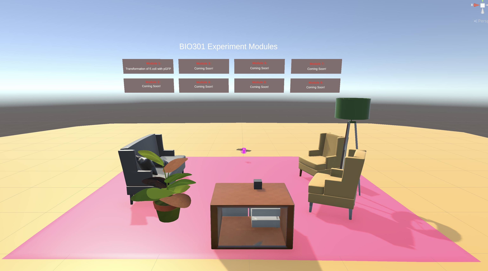
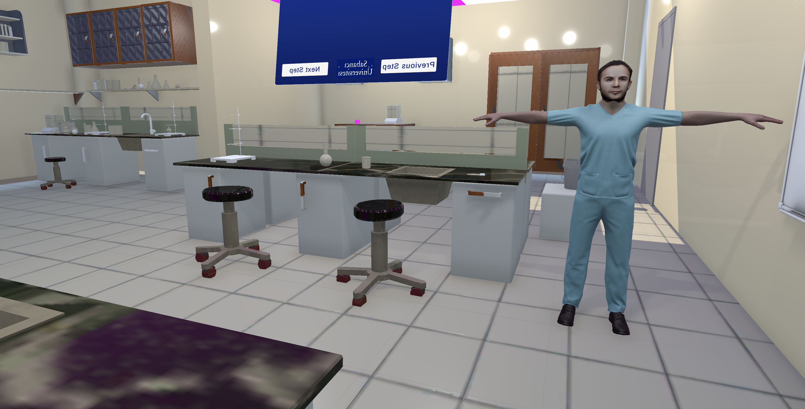
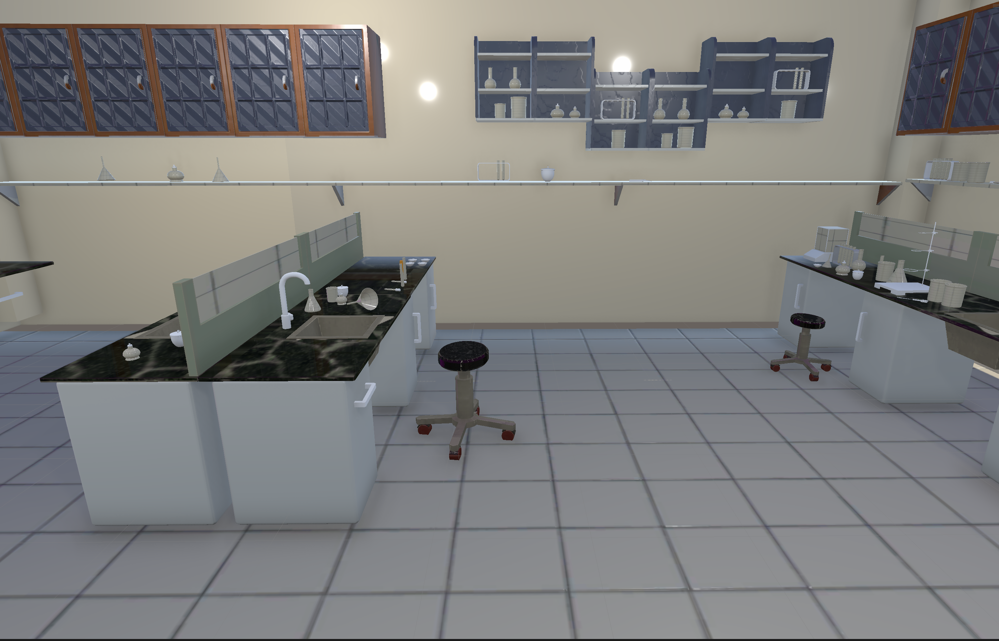
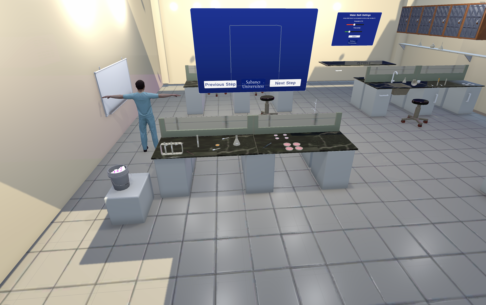

Most VR educational tools are built for one person at a time, so they miss the collaboration that real lab work actually requires.
Multi-User VR Laboratory
Our capstone project: a VR lab built in Unity where multiple people can share a session, complete with networked interaction, motion capture, and real lab scenarios.
We built a Unity capstone using Photon Fusion so multiple people could share a session, sync equipment, and get through lab tasks together in VR.
Multi-User VR Laboratory
VR Development
Unity, Blender, Photon Fusion, Oculus Quest, Rokoko SmartSuit Pro
February 2024 - May 2025
This was our senior capstone project: a multi-user VR lab where several people can join the same session, interact with lab equipment in real time, and work through experiments together. We built it in Unity for Oculus Quest headsets (Meta actually provided hardware support for this one), and used Photon Fusion to handle the real-time networking and syncing.

Background & Motivation
Most VR educational tools are designed for one person at a time. They're fine for teaching basic concepts, but they miss what actually makes a lab work: people communicating and doing things together.
We wanted to close that gap with an environment built around real multi-user interaction, where object states stay synced and people can actually work together. We focused on lab tasks that need coordination, like transferring liquids between test tubes, preparing solutions, and handling scientific tools.


Development Process
We built the environment and interactions in Unity with a physics-based system, so people can grab objects, manipulate lab tools, and watch changes happen in real time. Everything (holding objects, changing liquid levels, activating equipment) stays network-synced so everyone sees the same state.
We implemented core interaction logic, collider-based fluid manipulation, object ownership transfer through Photon, and custom VR controller handling.

Networking & Multi-User Experience
We used Photon Fusion to keep real-time connections between users stable. Everyone shows up as an avatar and can watch what everyone else is doing, with object states, transforms, and procedural steps all synced across the network.
That's what lets learners actually talk to each other, follow what someone else is doing, and get through tasks as a group, closer to what a real lab feels like than any single-user VR experience could be.
Motion Capture & Realistic Animation
To make it feel more real, we recorded an actual lab worker's movements with a Rokoko motion capture suit, cleaned up the data in Blender, and retargeted it onto a humanoid rig in Unity.
We also modeled the avatar's face to look like the real lab worker, with their permission, so the VR demonstrator felt like an actual person instead of a generic character. That figure walks users through proper lab procedures inside the environment, and they replicate the workflow afterward.
Using real motion data instead of animated presets made the instructional parts feel a lot more natural.
Hardware & Tools
The project was developed using:
- Unity (C#)
- Photon Fusion
- Oculus Quest
- Blender
- Rokoko SmartSuit Pro
We tested interactions directly on headset hardware throughout development.
Outcome
The final system shows how VR can support collaborative scientific training, combining real motion data, networked interactions, and a space that actually feels three-dimensional. People can work together, watch demonstrations, and learn procedures hands-on instead of just reading about them.
It's a starting point for something bigger. We could see this growing into AI-assisted instruction, more procedural content, or simulations with different roles for each user.
What this project taught me
The technical side of this project pushed us the hardest: things like image quality on headset hardware, and designing interactions in an actual 3D space instead of a flat screen. In a normal interface, you can predict pretty much every way someone will click or scroll. In VR, people move in ways you don't expect, reaching for objects at odd angles, walking into things they shouldn't, or grabbing something before you meant for them to. We had to think ahead about those differences and design around them before they became a problem, instead of just fixing them after.